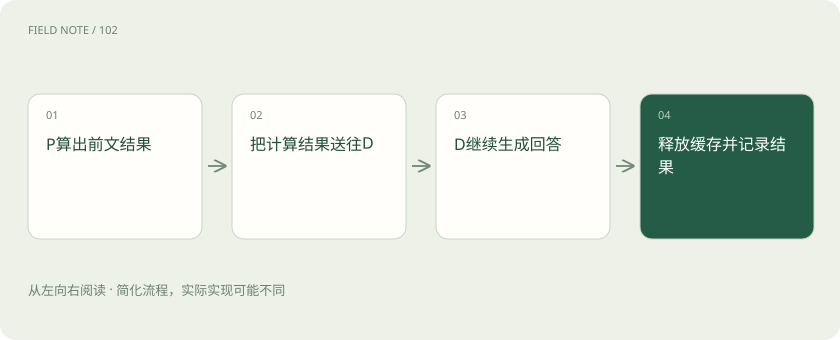
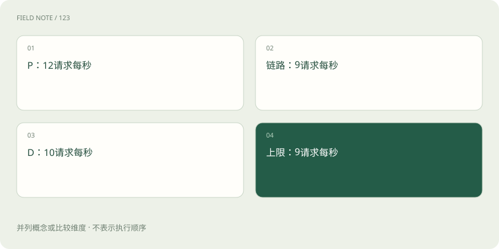

先读哪些知识
先用一个类比理解
类比只帮助建立直觉，不等同于技术的完整机制。
一图看懂

先看合设如何工作
合设服务在同一推理实例内处理提示词和后续生成，历史 KV 无须跨实例搬运。它可以把多条请求组成批次，也可以用分块 Prefill 等调度减轻长输入对生成的干扰。合设并非天然低效，它省去了额外传输和资源池协调，低负载或短输入场景尤其需要作为基线保留。
P 阶段到底产生什么
Prefill 并行处理提示词各位置，在各层产生后续注意力需要的 Key 与 Value。不同模型的层数、KV 头数、维度和数据类型决定缓存大小。不能用模型权重大小估计单请求 KV，也不能忽略分组查询注意力改变 KV 头数。某些架构还有额外状态，应以实现的缓存布局为准。
把请求交给两个池
拆分入口先安排 P 工作，再安排能接收该请求缓存的 D 工作。P 完成后，连接器根据块标识和目标布局组织传输，D 等待必要数据可用后才继续生成。跨池调度需要知道模型和缓存格式兼容性；同名模型若权重版本或位置处理不同，也不能简单复用缓存。 一些实现由 P 侧产生首个输出 Token，再把状态交给 D；因此首 Token 时间的边界要按实际协议测量，不能一律认定首字必由 D 生成。
图解：缓存跨池
连接器不是无限快的管道
实际链路可能经过 GPU、主机内存、网络和远端 GPU，不同实现有推送或拉取、不同缓冲和传输协议。有效带宽受数据布局、复制次数、并发与拓扑影响。即使网络标称带宽很高，缓冲不足、碎片、握手及 CPU 协调仍可能成为瓶颈，因此应测端到端完成时间。
用公式估算 KV 规模
常见缓存粗略字节数为 2×层数×Token 数×KV 头数×每头维度×每元素字节。假设 32 层、4096 Token、8 个 KV 头、128 维、每元素 2 字节，得到 536870912 字节，即 512 MiB。公式中的 2 代表 K 和 V；这不含块预留、元数据、对齐和其他运行内存。
传输下界不等于延迟承诺
若假想有效吞吐为 20 GiB/s，搬运 0.5 GiB 的纯传输时间下界约 25 毫秒。实际还要加入排队、缓冲等待、协议与同步开销；并发传输共享链路后单请求有效带宽会下降。这个算例只说明量级推导，不是任何硬件或框架的实测表现，更不能直接推出首 Token 加速。
流水线受最窄阶段限制
用请求每秒作统一单位，稳态吞吐上限近似为 P 容量、链路容量和 D 容量三者最小值。若 P 为 12、传输为 9、D 为 10 请求每秒，上限是 9。继续增加 P 只会积累待传 KV。长输出改变 D 的服务时间，长输入改变 P 和传输负担，因此容量必须按实际长度分布估计。 这个最小值只是必要上界；为了保持队列稳定和满足尾延迟目标，实际接纳速率通常需要留出余量，并通过负载实验确定。
图解：三段容量

缓冲是背压的承受者
P 比 D 快时，生成的 KV 需要停留在缓冲区；无限接纳会耗尽显存或主机内存。调度器应限制在途请求，必要时在入口排队或停止 P 分配。根据队列长度调度时还应考虑 KV 字节量：十个短请求与十个长请求的内存风险并不相同。缓存释放需要处理取消和断连。
同预算比较才能判断拆分
假设预算均为四块同型号 GPU：合设用四个实例；拆分用一块 P、三块 D。若测得每块 P 可处理 12 请求每秒、每块 D 可处理 3，拆分计算上限为 min(12,9)=9，再受链路限制。不能拿它与单块合设比较；应让四块合设在同一输入输出分布和延迟目标下实测。
收益来自隔离而非魔法
拆分允许分别扩容、配置并行方式和隔离长提示词干扰，但也增加缓存搬运、状态交接和容量碎片。合设配合分块调度可能已满足目标；拆分也可能改善尾延迟而不提升低负载效率。验收至少覆盖首 Token、Token 间隔、吞吐、在途缓存、链路利用率与单位合格请求成本。
测量要保留长度联合分布
输入长而输出短的请求、输入短而输出长的请求，会给 P 与 D 带来完全不同的压力。只使用平均输入和平均输出可能构造出线上根本不存在的“平均请求”，从而错估池比例。应保留长度分桶及其联合分布，另看突发到达和取消率。
评测还要有预热状态：空缓存启动、稳定负载和突发高峰分别测量，并记录缓存命中。若合设使用热前缀而拆分从冷缓存开始，或反过来，结果不可归因于架构本身。公平比较不是要求两边实现相同，而是给定相同资源、任务分布和服务目标。
放在一起对比
| 方案 | 主要收益 | 额外成本 |
|---|---|---|
| 合设 | 状态就地复用 | 阶段争用 |
| 拆分 | 独立扩容调度 | KV传输协调 |
| 分块Prefill | 缓解长输入干扰 | 调度取舍 |
放进真实场景
沿一条长输入请求追踪：入口排队 10 ms，P 计算 80 ms，等待缓冲 15 ms，传输 30 ms，D 排队 20 ms，再开始生成。仅把 P 从 80 降到 60 并不保证总首 Token 同幅改善；若更多请求挤入 D，排队可能反而增加。所有数值为假设。
别踩这个误区
想一想
为什么 P 很空闲而用户仍很慢？
瓶颈可能在传输、D 队列或缓存分配；空闲计算资源无法自动绕过链路和显存约束。
关联阅读
资料与边界
本文为原创知识讲解。类比和图示经过简化；示例数字不代表实测或报价。整理日期：2026-11-04。文末列出对应技术的原始资料，具体功能与版本支持请以原文为准。